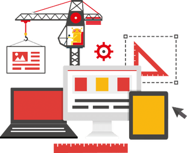

Site-ul www.CumSaFaciUnSiteWeb.com este un ghid gratuit care te invață să realizezi un site pe platforma WordPress, în doar 7 pași, chiar dacă nu ai cunoștințele necesare din domeniul IT. De asemenea, este prezentată și alternativa Bootstrap pentru utilizatorii mai avansați.
Acest site este pentru persoanele cu idei mari care doresc să-și pună în aplicare ideile repede, dar la fel de ieftin posibil. Fie că ai nevoie de un site web pentru compania ta, un blog personal ori pur și simplu vrei să-ți aprofundezi cunoștințele, ai ajuns în locul potrivit.
Acum câțiva ani era aproape imposibil să realizezi un site "de calitate" fără să știi foarte bine programare. Dar până în zilele noastre tehnologia a evoluat enorm iar lucrurile stau total diferit. Ghidul te poate ajuta să economisești zeci sau chiar sute de dolari. Cel puțin aceasta este costul pentru dezvoltarea unui site la o companie de web design, deci nu va trebui să plătești o mulțime de bani pentru servicii de care, cel mai probabil, nu te vei folosi pe deplin. Nu este grozav că în acest fel poți salva o mulțime de bani? Și banii economisiți pot fi cheltuiți în alte scopuri!
Ghidul nostru este împărțit în 2 părți: platforma WordPress și fundația Bootstrap:
Ghidul nostru este împărțit în 2 părți: platforma WordPress și fundația Bootstrap:
- Vrei să construiești un website întreg (blog, magazin, site de prezentare etc) în doar 7 pași? Dacă poți folosi un editor de text, cum ar fi Microsoft Word, atunci cu platforma Wordpress te vei descurca fără probleme. Ghidul Wordpress conține fiecare pas este exemplificat printr-un tutorial video, parcurgerea celor 7 pași constituie realizarea unui website complet.
- Bootstrap este cea mai populară fundație de HTML, CSS, și JavaScript pentru construirea rapidă a website-urilor responsiv. Dacă îți place programarea și vrei să devii mai bun exersând sau chiar te pricepi la construirea site-urilor web și vrei să încerci ceva nou atunci Bootstrap este ceea ce ai nevoie.
Deși, pe site-ul www.CumSaFaciUnSiteWeb.com vei învăța să construiești un site web complet funcțional iar ghidul cuprinde o bună introducere către partea web, scopul nu este de a deveni un web designer profesionist.